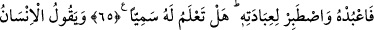

ALLAH İSMİNİN
YÜCELİĞİ
64. Biz ancak Rabbi’nin emri ile ineriz. Önümüzde, arkamızda ve bunlar arasında
bulunan her şey O’na aittir. Rabb’in asla unutkan değildir.
65. (O), göklerin yerin ve bunlar arasında bulunan şeylerin Rabb’idir. O’na kulluk
et ve O’na kullukta sabret. Hiç O’nun adıyla anılan birini biliyor musun?
66. İnsan “Ben öldükten sonra mı diri olarak çıkarılacağım?” diyor.
67. İnsan önceden hiçbir şey değilken kendini nasıl yarattığımızı düşünmüyor mu?
“Biz ancak Rabb’inin emri ile ineriz.” Mücâhid şöyle demiştir: “Cebrâil (a.s.),
Rasûlullah (a.s.)’a gelmekte gecikti. Sonraki gelişinde Rasûlullah (a.s.) ona: “Seni geç
bırakan nedir, ey Cebrâil?” diye sordu. O da: “Ben nasıl sizin yanınıza gelirim ki, siz
tırnaklarınızı kesmiyor, bıyıklarınızı kırpmıyor, parmak boğumlarınızı yıkamıyor ve
misvak kullanmıyorsunuz” [34] dedi, sonra da bu âyeti okudu. Nitekim Esbâbü’n-nüzûl
ve Sefînetü’l-ebrâr’da böyle geçmektedir.
Bir hadîste: “Parmak boğumlarınızı temizleyiniz.”[35] buyrulmuştur. Bunlar
parmakların mafsalları ve üstlerindeki boğumlarıdır. Her parmağın iki boğumu ve üç
mafsalı vardır. Başparmağın ise bir boğumu ve iki mafsalı vardır. Bunların tertemiz
yıkanmasının emredilmesi, kirin su ile deri arasına girerek aralarında kir kalıp da
cünüplüğün devamına sebep olmaması içindir. Bu bilgiyi Kurtubî zikretmiştir.
Bazı müfessirler şöyle der: Rasûlullah (s.a.)’e Ashâb-ı Kehf, Zülkarneyn ve rûh
hakkında sorulduğu zaman O, nasıl cevap vereceğini bilemedi ve kendisine bu
hususlarda vahiy indirilmesini umdu. Cebrâil (a.s.) ise on beş veya kırk gün sonra geldi.
Bu durum Hz. Peygamber (a.s.)’a çok ağır geldi. İşte bu âyet, Cebrâil (a.s.)’ın Hz.
Peygamber (s.a.)’e verdiği cevabı anlatmaktadır. O zaman müşrikler: “Rabb’i
Muhammed’i terk etti ve ona kızdı.” dediler. Bunu açıklayan âyet inince Hz. Peygamber
(s.a.) Cebrâil (a.s.)’a: “Aklıma kötü şeyler gelecek ve seni özleyecek kadar geç
kaldın.” dedi. Bunun üzerine Cebrâil (a.s.): “Ben seni daha çok arzuluyordum, ama
ben Allah’tan emir alan bir kulum. Benimle bir emir gönderildiğinde yere inerim,